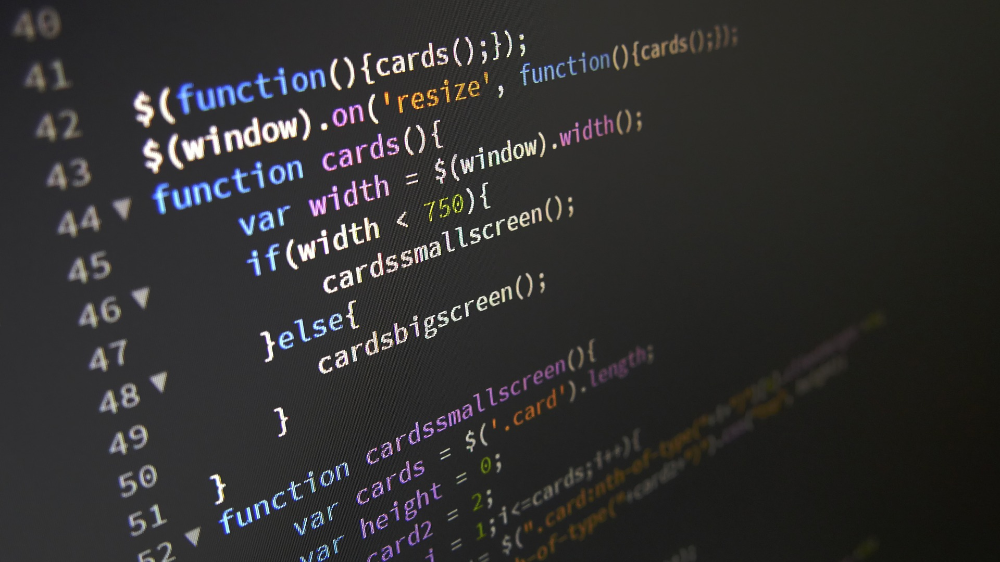
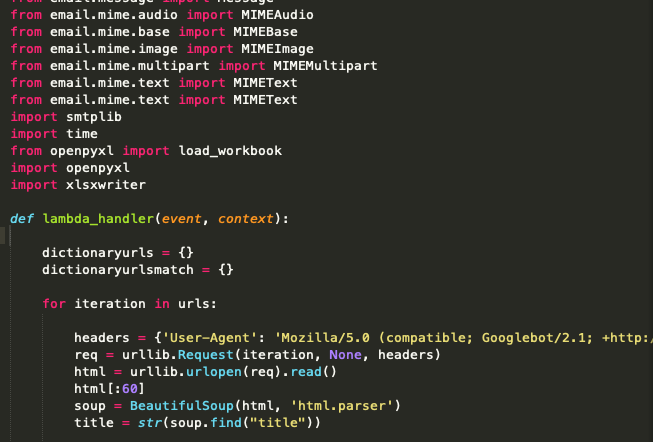
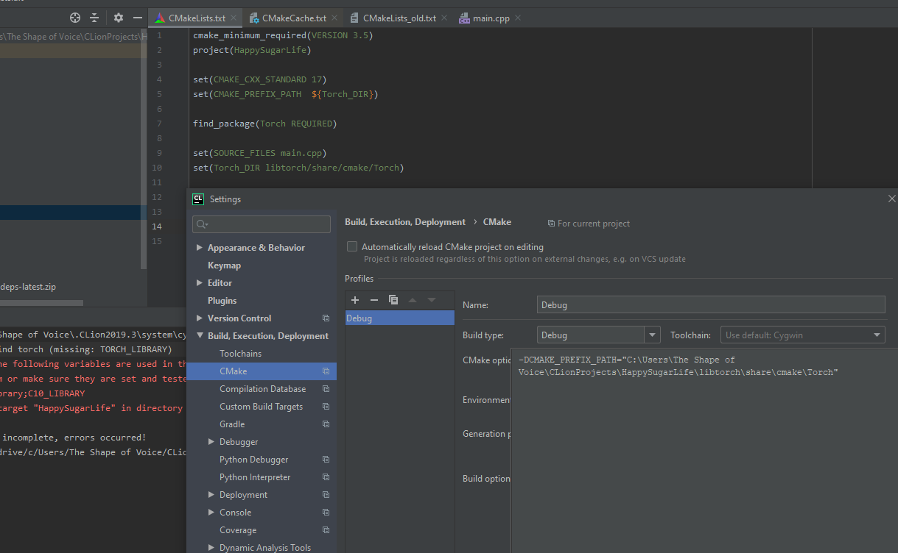
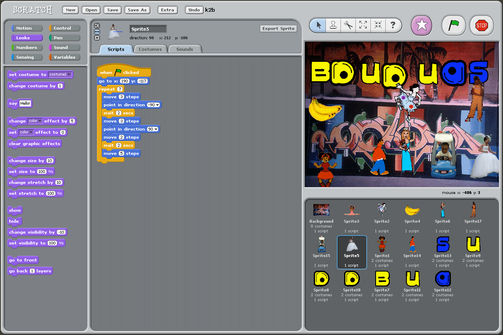

Programming Languages
HTML

The Hypertext Markup Language is a text-based markup language for structuring electronic documents such as text with hyperlinks, images and other content. HTML documents are the basis of the World Wide Web and are displayed by web browsers.
JS
JavaScript is a script language that was originally developed by Netscape in 1995 for dynamic HTML in web browsers to evaluate user interactions, change content, reload or generate it and thus expand the possibilities of HTML.
C++

C++ is a programming language standardized by ISO. It was developed in 1979 by Bjarne Stroustrup at AT&T as an extension of the C programming language. C++ enables both efficient and machine-oriented programming as well as programming at a high level of abstraction.
Python
The Python script is basically a file containing code written in Python. The file containing python script has the extension ' . py ' or can also have the extension ' . pyw ' if it is being run on a windows machine. To run a python script, we need a python interpreter that needs to be downloaded and installed.
C
C is an imperative and procedural programming language developed by computer scientist Dennis Ritchie at Bell Laboratories in the early 1970s. Since then it has been one of the most widely used programming languages. The areas of application of C are very different.
Scratch
Scratch is the world’s largest coding community for children and a coding language with a simple visual interface that allows young people to create digital stories, games, and animations. Scratch is designed, developed, and moderated by the Scratch Foundation, a nonprofit organization.